Daftar Menu Katsuya
Jelajahi berbagai pilihan hidangan autentik khas Jepang kami, mulai dari hidangan pembuka yang menggugah selera hingga pencuci mulut yang manis.
Appetizer (Hidangan Pembuka)
-
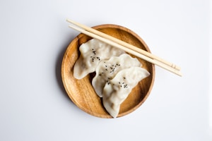
1. Gyoza Panggang (5 pcs)
$4.00 (¥550)Pangsit khas Jepang isi daging babi/ayam dan sayuran yang dipanggang renyah di bagian bawah.
-

2. Edamame Rebus
$3.00 (¥400)Kacang kedelai muda khas Jepang yang direbus perlahan dengan taburan garam laut.
-
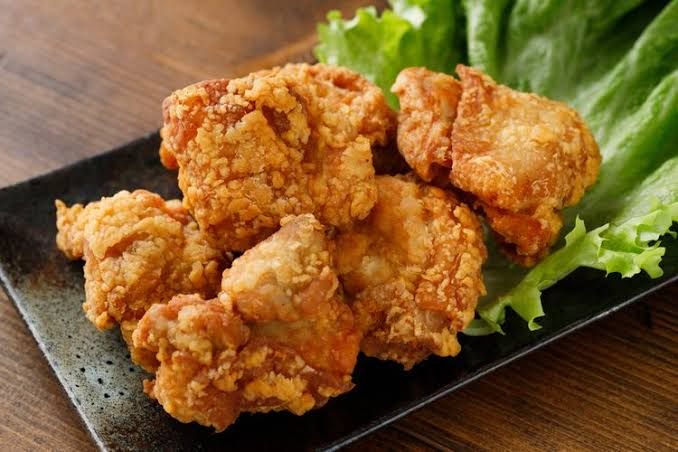
3. Chicken Karaage
$5.00 (¥700)Ayam goreng tanpa tulang khas Jepang yang renyah di luar dan sangat juicy di dalam.
-
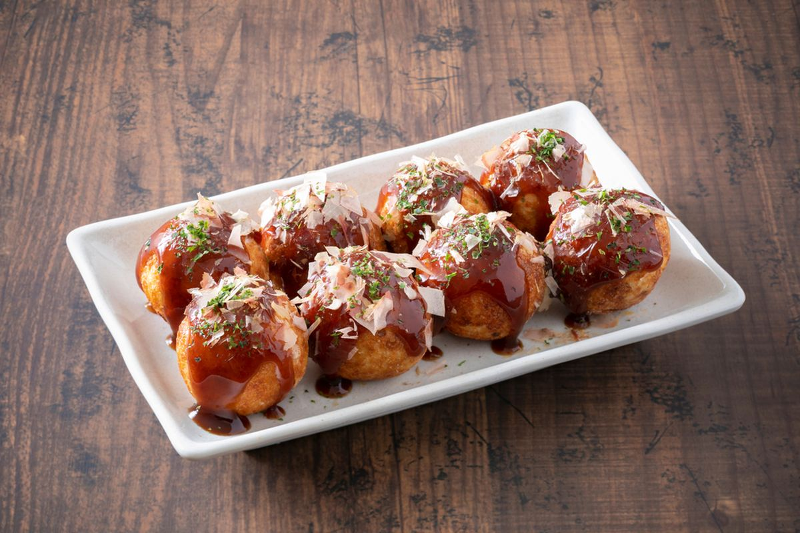
4. Takoyaki (4 pcs)
$4.50 (¥600)Bola-bola adonan gurih berisi potongan gurita dengan saus manis, mayones, dan katsuobushi.
-
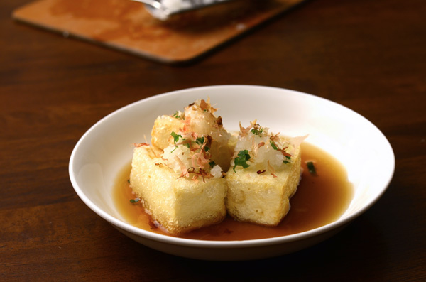
5. Agedashi Tofu
$3.50 (¥450)Tahu sutra Jepang yang digoreng ringan, disajikan dengan kuah dashi hangat dan lobak parut.
Main Course (Hidangan Utama)
-

1. Tokyo Tonkotsu Ramen
$8.50 (¥1,200)Ramen kuah kaldu tulang pekat dengan toping chashu lembut dan telur setengah matang.
-

2. Spicy Miso Ramen
$9.00 (¥1,300)Ramen dengan bumbu miso pedas khas Hokkaido dipadu dengan potongan daging cincang.
-

3. Chicken Katsu Curry
$7.50 (¥1,050)Nasi kari Jepang kental disajikan dengan ayam katsu krispi yang renyah.
-
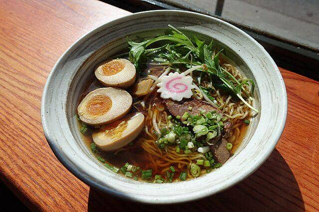
4. Shoyu Ramen
$8.00 (¥1,100)Ramen klasik dengan kuah kaldu kecap asin Jepang (shoyu) yang jernih dan gurih, disajikan dengan irisan ayam panggang.
-
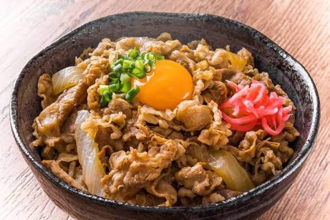
5. Beef Yakiniku Don
$9.50 (¥1,350)Nasi putih hangat dalam mangkuk yang disajikan dengan irisan daging sapi premium panggang bumbu yakiniku manis gurih.
-
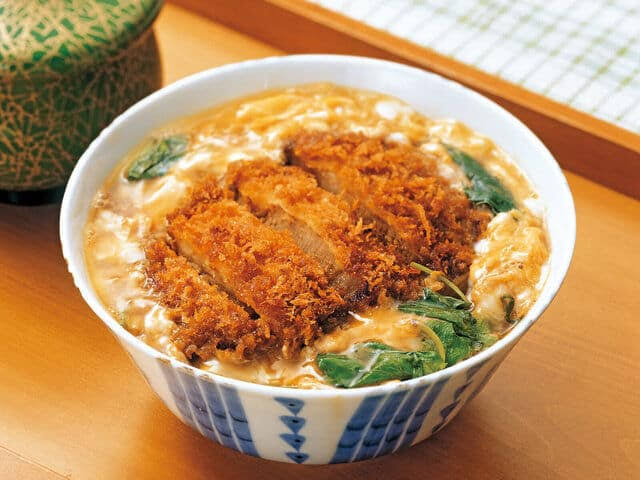
6. Chicken Katsudon
$8.00 (¥1,100)Chicken katsu renyah yang dimasak perlahan bersama kocokan telur dan bawang bombay dalam saus kaldu manis di atas nasi hangat.
-
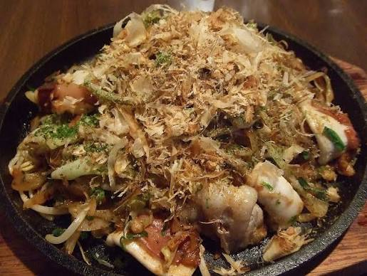
7. Seafood Yaki Udon
$8.50 (¥1,200)Mi udon kenyal dan tebal yang ditumis dengan udang, cumi, sayuran segar, dan saus yakisoba khas Jepang.
-
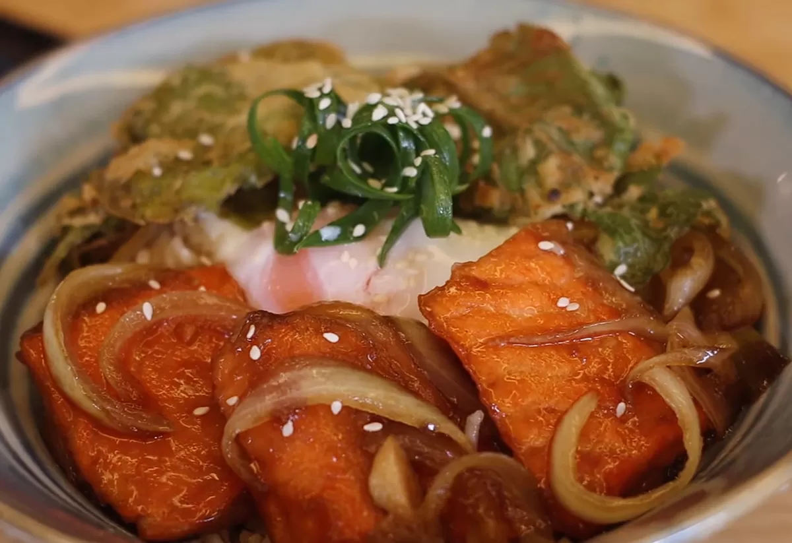
8. Salmon Teriyaki Set
$10.00 (¥1,450)Potongan filet salmon panggang yang dilumuri saus teriyaki manis khas Jepang, disajikan lengkap bersama nasi putih hangat.
Dessert (Hidangan Penutup)
-
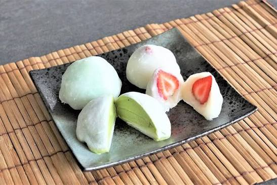
1. Mochi Ice Cream
$3.50 (¥500)Kue mochi kenyal yang berisi es krim dingin. Tersedia rasa Matcha, Vanilla, dan Ogura.
-
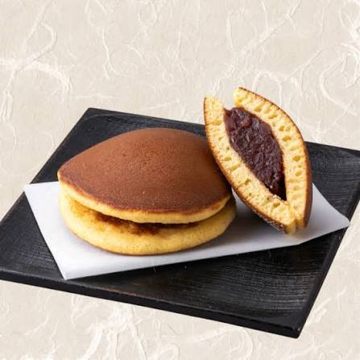
2. Dorayaki Cokelat
$2.50 (¥350)Pancake lembut berlapis madu khas Jepang dengan isian pasta cokelat tebal.
-
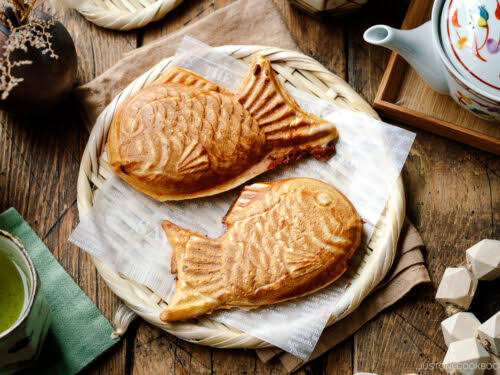
3. Taiyaki Kacang Merah
$3.00 (¥400)Kue panggang berbentuk ikan tradisional Jepang dengan isian pasta kacang merah manis.
-
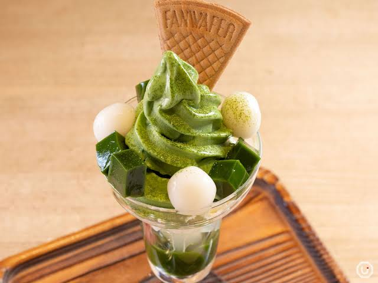
4. Matcha Parfait
$5.50 (¥750)Gelas tinggi berisi lapisan es krim matcha, jeli, mochi, dan krim kocok manis.
-
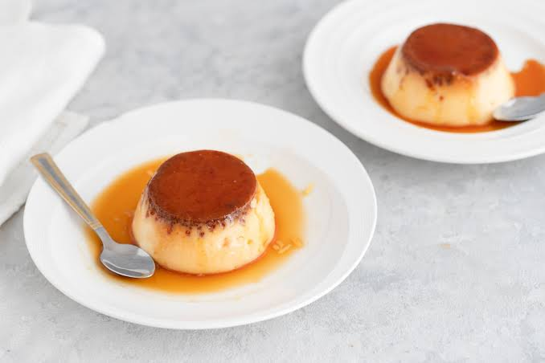
5. Japanese Purin
$3.00 (¥400)Puding karamel panggang ala Jepang yang sangat lembut dan lumer di mulut.
Minuman
-
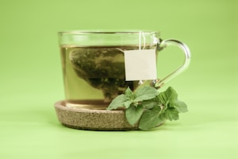
1. Ocha (Teh Hijau)
$1.50 (¥200)Teh hijau khas Jepang asli yang menyegarkan (Tersedia Dingin/Panas, bisa diisi ulang).
-
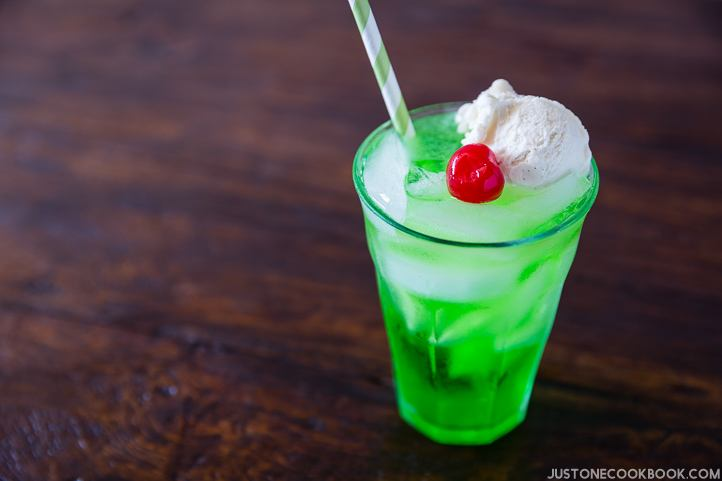
2. Melon Soda Float
$3.00 (¥400)Minuman soda rasa melon ikonik Jepang yang disajikan dengan topping es krim vanilla.